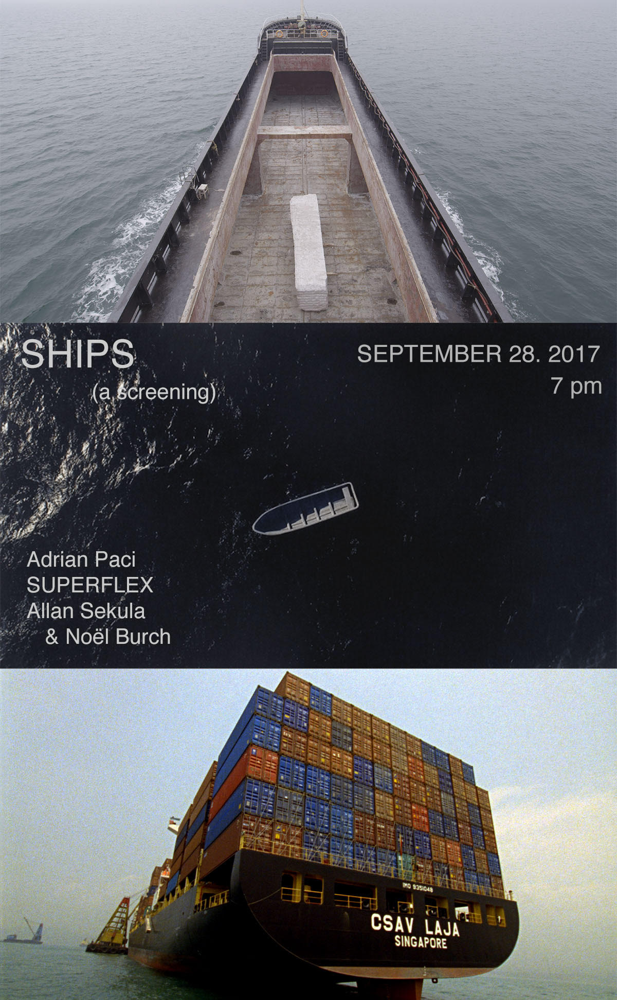

ships and boats - a screening and Now then closing
September 2017
Thursday, September 28, 2017
About the films
Kwassa Kwassa
Kwassa Kwassa is a film work by SUPERFLEX portraying the construction of a boat on the island of Anjouan, in the Comoro archipelago between Madagasgar and Mozambique. Although usually used for fishing, boats like the one built in the film are in many cases also used for transporting migrants to the neighbouring island of Mayotte, a French oversea territory and the outermost region of the EU. The islands are 70 km apart – separated by a seemingly short, but life-threatening journey that has claimed more than 10,000 lives of women, men and children. Kwassa Kwassa interprets the boat as a contextual construction intended to carry migrants on a dangerous, politically complex journey. Carrying more than symbolic meaning as a vessel for dreams of reaching a better life on the other shore, the boat is also a labor-intensive work of craftsmanship and the physical passage bearing human lives to safety – as the title questions in translation “an unstable boat” from the language of the Comoro Islands.
Courtesy of SUPERFLEX
The Forgotten Space
The Forgotten Space follows container cargo aboard ships, barges, trains and trucks, listening to workers, engineers, planners, politicians, and those marginalized by the global transport system. We visit displaced farmers and villagers in Holland and Belgium, underpaid truck drivers in Los Angeles, seafarers aboard mega-ships shuttling between Asia and Europe, and factory workers in China, whose low wages are the fragile key to the whole puzzle. And in Bilbao, we discover the most sophisticated expression of the belief that the maritime economy, and the sea itself, is somehow obsolete.
A range of materials is used: descriptive documentary, interviews, archive stills and footage, clips from old movies. The result is an essayistic, visual documentary about one of the most important processes that affects us today. The Forgotten Space is based on Sekula’s Fish Story, seeking to understand and describe the contemporary maritime world in relation to the complex symbolic legacy of the sea.
Courtesy of the Allan Sekula, Noël Burch, and Doc.Eye Films
The Column
Courtesy of the artist and Galerie Peter Kilchmann
